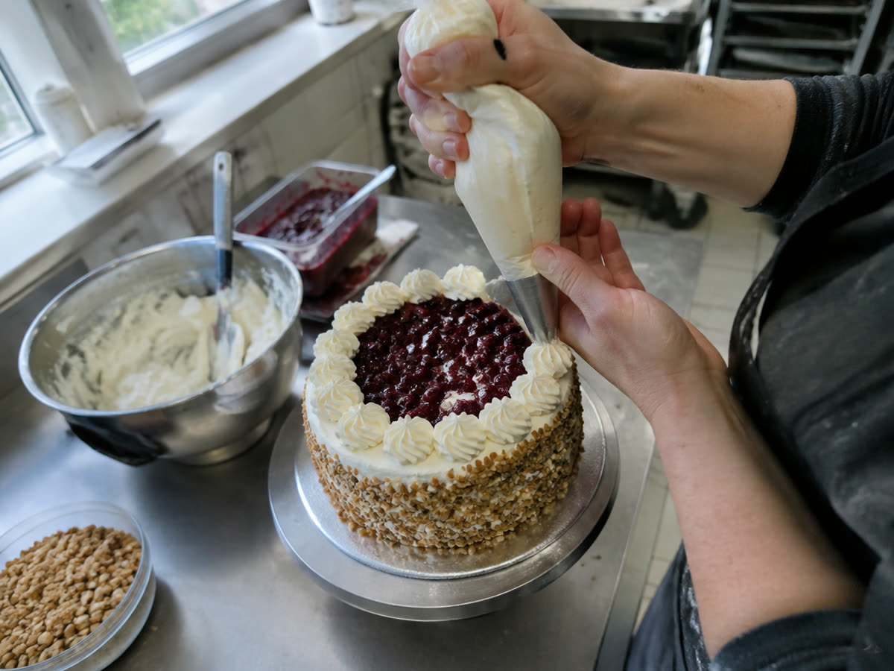

Reels drehen, ohne vor die Kamera zu gehen
Der häufigste Einwand ist nicht die Zeit, sondern die Kamera. Sie müssen nicht ins Bild, und das ist kein Nachteil.
Der häufigste Einwand im ersten Gespräch lautet nicht, dass die Zeit fehlt. Er lautet, dass man nicht vor die Kamera will. Das ist ein guter Einwand, und die Antwort darauf ist einfach: Sie müssen nicht. Ein großer Teil der erfolgreichsten Reels in Handwerk, Gastronomie und Handel zeigt überhaupt kein Gesicht.
Wichtig ist nicht, dass jemand zu sehen ist. Wichtig ist, dass etwas zu sehen ist.

Was stattdessen ins Bild kommt
Hände bei der Arbeit tragen ein Video erstaunlich weit. Eine Fuge, die gezogen wird. Ein Messer, das durch Teig geht. Eine Schraube, die versenkt wird. Nahaufnahmen von Handgriffen sind das verlässlichste Material überhaupt, weil sie Können zeigen, ohne dass jemand davon erzählen muss.
Dann das Ergebnis im Vergleich zum Ausgangszustand. Vorher und nachher ist kein Trick, sondern schlicht das, was Menschen sehen wollen, bevor sie jemanden beauftragen. Ein Bad vor der Sanierung und nach der Sanierung erklärt mehr als jede Leistungsbeschreibung.
Dazu kommen Abläufe: wie etwas entsteht, in welcher Reihenfolge, mit welchem Werkzeug. Und Räume, wenn sie etwas über die Arbeit sagen, also eine Werkstatt im Betrieb und nicht ein leerer Flur. Was sich daraus konkret bauen lässt, steht unter Reel-Ideen für Handwerksbetriebe.
Die Stimme ist nicht dasselbe wie das Gesicht
Viele, die nicht ins Bild wollen, haben kein Problem damit, etwas zu erklären. Das reicht völlig. Ein Video, über dem Ihre Stimme liegt, während man Ihre Hände arbeiten sieht, wirkt persönlich und verlangt keine Kamerapräsenz. Sie reden dabei nicht in ein Objektiv, sondern beschreiben, was Sie ohnehin gerade tun.
Auch das ist nicht zwingend. Viele Reels laufen vollständig ohne Sprache, nur mit Ton aus der Umgebung und eingeblendetem Text. Das Geräusch einer Flex, das Zischen in der Pfanne, der Hochdruckreiniger: Originalton trägt mehr, als die meisten erwarten. Wenn gesprochen wird, gehören Untertitel dazu, weil der überwiegende Teil stumm schaut. Warum das so ist, steht unter Untertitel in Reels.

Was sich ändert, wenn doch jemand zu sehen ist
Ehrlich bleiben gehört dazu: Mit einem Gesicht funktioniert es im Schnitt besser. Menschen merken sich Menschen, und bei Dienstleistungen, bei denen jemand ins Haus kommt, entsteht Vertrauen schneller, wenn man vorher gesehen hat, wer da klingelt. Das gilt besonders für Betriebe, die in Privatwohnungen arbeiten.
Daraus folgt aber kein Zwang. Es gibt Zwischenstufen, und die reichen meistens. Einmal im Monat ein kurzer Gruß, der Rest ohne Gesicht. Oder ein Mitarbeiter, der es gerne macht, statt des Chefs, der es nicht mag. Erzwungene Auftritte sieht man dem Video an, und sie schaden mehr, als sie nützen.
Wenn andere Menschen im Bild sind
Sobald Kundschaft, Gäste oder Mitarbeiter erkennbar zu sehen sind, brauchen Sie deren Einverständnis, bevor das Video online geht. Das ist in Deutschland keine Formalie, sondern geltendes Recht am eigenen Bild. Bei Mitarbeitern sollte es schriftlich vorliegen, bei Gästen reicht in der Praxis eine klare Absprache vorab.
Am einfachsten ist es, das Problem gar nicht entstehen zu lassen: Kamera so setzen, dass Dritte nicht erkennbar sind, oder im Zweifel die Aufnahme nicht verwenden. Ein gutes Video ist schnell neu gedreht, eine Abmahnung nicht schnell erledigt.
Wie ein Drehtag abläuft, an dem Sie normal weiterarbeiten und wir das Material sammeln, steht unter Dreh vor Ort. Den ersten Monat können Sie kostenlos testen, auch vollständig ohne Gesicht.


Lernen wir uns kennen.
15 Minuten am Telefon oder per Video. Danach wissen Sie, ob und wie Social Media für Ihren Betrieb funktioniert.